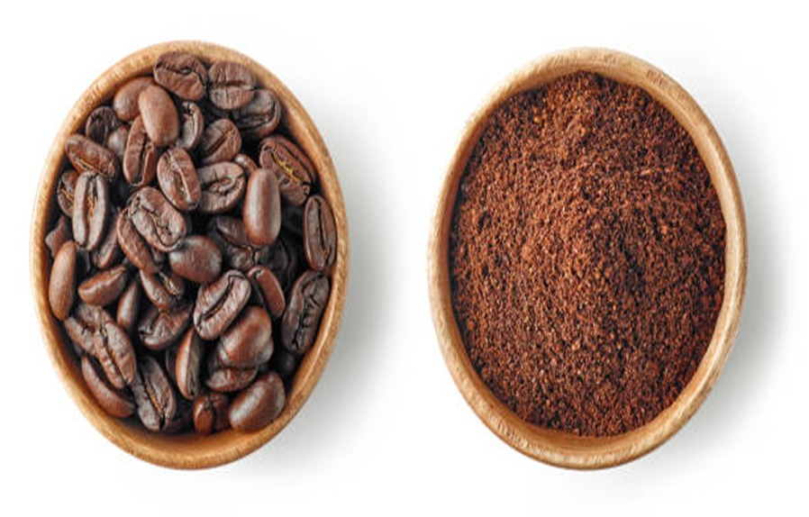

"No importa la distancia, importa la calidad"
Antecedentes del café Es una de las bebidas más consumidas en el mundo, omnipresente en nuestro país. Sin el café no se entienden desayunos ni sobremesas. Pero además de ser una de las bebidas más consumidas en el mundo, el origen del café es una historia llena de curiosidades. La historia del café empieza en el cuerno de África, en Etiopía, sobre el siglo IX. Se sabe el origen geográfico, la provincia de Kaffa, pero no el momento exacto, ya que no existen documentos sobre cuándo el hombre empezó a consumir granos de café. La leyenda cuenta que un miembro de la tribu de Kaldi, habitantes de las zonas de más altitud de Etiopía, observó como las cabras tenían mucha más energía tras comer un tipo de frutos, parecidos a las cerezas. Al probarlas él mismo, descubrió las propiedades energizantes y excitantes y las trasladó a su tribu.
Objetivo General Crear un beneficio de café que cuente con la máxima capacidad de exportación el cual se encuentre al alcance de todos nuestros futuros clientes y proveedores aumentando el prestigio empresarial con la exportación del café con servicios y estándares de alta calidad con la finalidad de la satisfacción de los próximos consumidores. Objetivos específicos
• Mejorar calidad de café mediante técnica de procesamiento adecuadas.
• Innovar la presentación de los sacos de café para las exportaciones.
• Ofrecer precios accesibles.
• Cumplir con los estándares internacionales.
• Incrementar la eficiencia en la recolección y selección de granos.
• Establecer alianzas estratégicas.
Exportación El proceso de transporte de la mercancía, esto incluye: embalaje, etiquetado, carga, transporte, organización de rutas y medios de transporte, controles de calidad y supervisión de la carga.